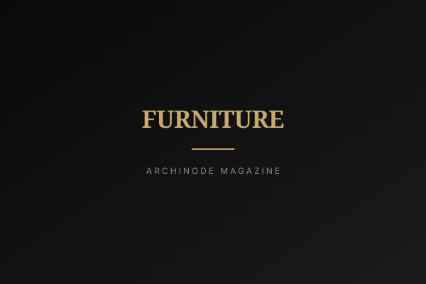

<!DOCTYPE html>
<html lang="ko">
<head>
<meta charset="UTF-8">
<meta name="viewport" content="width=device-width, initial-scale=1.0">
<title>벽이 비싸지는 시대 — 하이엔드 마감재의 부상 | ARCHINODE Magazine</title>
<meta name="description" content="프리미엄 벽지와 하이엔드 벽장재가 2026 하반기 마감재 시장을 끌어올린다. 소비자·업계·친환경 인증의 세 각도로 짚는다.">
<meta property="og:title" content="벽이 비싸지는 시대 — 하이엔드 마감재의 부상">
<meta property="og:image" content="../assets/magazine/placeholders/furniture.svg">
<link rel="icon" type="image/x-icon" href="../favicon.ico">
<link rel="preconnect" href="https://fonts.googleapis.com">
<link rel="preconnect" href="https://fonts.gstatic.com" crossorigin>
<link href="https://fonts.googleapis.com/css2?family=Inter:wght@300;400;500;600;700;800;900&family=Noto+Sans+KR:wght@300;400;500;700;900&display=swap" rel="stylesheet">
<link rel="stylesheet" href="https://cdnjs.cloudflare.com/ajax/libs/font-awesome/6.5.1/css/all.min.css">
<link rel="stylesheet" href="../style.css">
<style>
.article-hero { position: relative; padding: 140px 24px 80px; text-align: center; background-image: linear-gradient(rgba(10,10,10,0.6), rgba(10,10,10,0.78)), url('../assets/magazine/placeholders/furniture.svg"announcement-bar"><span data-en="2026 Brand Listing —" data-ko="2026 브랜드 입점 —">2026 Brand Listing —</span> <strong data-en="Now Free" data-ko="무료">Now Free</strong> &nbsp;|&nbsp; <span data-en="List your brand on ARCHINODE at no cost." data-ko="ARCHINODE에 무료로 브랜드를 등록하세요.">List your brand on ARCHINODE at no cost.</span> <a href="../list-your-brand.html" data-en="Learn more →" data-ko="자세히 보기 →">Learn more &rarr;</a></div>
<header class="header" id="header"><div class="container"><a href="../index.html" class="logo">ARCHINODE <span class="logo-sub">건축을 잇다</span></a><nav class="main-nav" id="mainNav"><div class="nav-dropdown"><button class="nav-dropdown-trigger" onclick="toggleCatMenu()" data-en="Categories" data-ko="카테고리">Categories <i class="fas fa-chevron-down"></i></button><div class="nav-dropdown-menu" id="catMenu"><a href="../categories/furniture.html"><span>Furniture</span><small>가구</small></a><a href="../categories/bathroom.html"><span>Bathroom</span><small>욕실</small></a><a href="../categories/outdoor.html"><span>Outdoor</span><small>아웃도어</small></a><a href="../categories/lighting.html"><span>Lighting</span><small>조명</small></a><a href="../categories/kitchen.html"><span>Kitchen</span><small>주방</small></a><a href="../categories/office.html"><span>Office</span><small>오피스</small></a><a href="../categories/finishes.html"><span>Finishes</span><small>마감재</small></a><a href="../categories/wellness.html"><span>Wellness</span><small>웰니스</small></a><a href="../categories/decor.html"><span>Decor</span><small>데코</small></a><a href="../categories/construction.html"><span>Construction</span><small>건축자재</small></a></div></div><a href="../brands.html" data-en="Brands" data-ko="브랜드">Brands</a><a href="../trend-report.html" data-en="Brand Magazine" data-ko="브랜드 매거진">Brand Magazine</a><a href="../magazine.html" data-en="Magazine" data-ko="매거진" style="color:var(--black);font-weight:600;">Magazine</a><a href="../about.html" data-en="About" data-ko="소개">About</a><a href="../list-your-brand.html" class="nav-cta" data-en="List Your Brand" data-ko="브랜드 입점">List Your Brand</a></nav><div class="header-actions"><a href="../brand-portal/login.html" style="font-size:0.82rem;color:#C8A96E;font-weight:600;" data-en="Brand Login" data-ko="브랜드 로그인">Brand Login</a><button class="search-toggle" onclick="toggleSearch()" aria-label="Search"><i class="fas fa-search"></i></button><a href="../auth/profile.html" aria-label="Saved"><i class="far fa-bookmark"></i></a><a href="#" class="lang-switch" onclick="toggleLang(event)">KR / EN</a><button class="mobile-toggle" onclick="toggleMobile()" aria-label="Menu"><i class="fas fa-bars"></i></button></div></div></header>
<div class="search-overlay" id="searchOverlay"><span class="search-close" onclick="toggleSearch()">&times;</span><div class="search-box"><input type="text" placeholder="Search brands, products, designers..." data-en-placeholder="Search brands, products, designers..." data-ko-placeholder="브랜드, 제품, 디자이너 검색..."><button><i class="fas fa-arrow-right"></i></button></div></div>
<section class="article-hero">
    <span class="tag" data-en="Finishes" data-ko="자재">자재</span>
    <h1 data-en="When Walls Get Expensive: The Rise of High-End Finishes" data-ko="벽이 비싸지는 시대 — 하이엔드 마감재의 부상">벽이 비싸지는 시대 — 하이엔드 마감재의 부상</h1>
    <p class="subtitle" data-en="Premium wallpapers and stone-look boards are widening the finishes market in H2 2026." data-ko="프리미엄 벽지와 석재 질감 벽장재가 넓히는 2026 하반기 마감재 시장">프리미엄 벽지와 석재 질감 벽장재가 넓히는 2026 하반기 마감재 시장</p>
    <div class="meta">2026-07-02 <span>·</span> ARCHINODE Editorial</div>
</section>
<article class="article-body">
<p class="lead" data-en="Something quiet is happening to the wall. Through the first half of 2026, Korea&#x27;s interior-material market has been pushing its money upward — premium wallpapers, board panels that mimic natural marble and high-grade stone, square-tile-format laminate flooring. KSW&#x27;s upgrade of its DID premium line &#x27;Nine,&#x27; launched in the first half, is one marker of a broader move: the surfaces we used to treat as background are becoming the place where budgets go." data-ko="벽에 조용한 변화가 일어나고 있다. 2026년 상반기 내내 한국 인테리어 자재 시장은 돈을 위쪽으로 밀어 올리는 중이다 — 프리미엄 벽지, 천연 대리석과 고급 석재의 질감을 구현한 보드형 벽장재, 정사각 타일형 강마루. 상반기에 출시된 KSW 디아이디 프리미엄 라인 &#x27;나인&#x27;의 업그레이드는 더 큰 흐름의 한 표식이다. 우리가 배경으로 취급하던 표면이, 이제 예산이 향하는 자리가 되어간다.">벽에 조용한 변화가 일어나고 있다. 2026년 상반기 내내 한국 인테리어 자재 시장은 돈을 위쪽으로 밀어 올리는 중이다 — 프리미엄 벽지, 천연 대리석과 고급 석재의 질감을 구현한 보드형 벽장재, 정사각 타일형 강마루. 상반기에 출시된 KSW 디아이디 프리미엄 라인 &#x27;나인&#x27;의 업그레이드는 더 큰 흐름의 한 표식이다. 우리가 배경으로 취급하던 표면이, 이제 예산이 향하는 자리가 되어간다.</p>
<h2 data-en="From Background to Statement" data-ko="배경에서 주인공으로">배경에서 주인공으로</h2>
<p data-en="For years the wall was the cheapest decision in a renovation — a roll of white paper, chosen last, forgotten first. That logic is inverting. High-end wall panels now reproduce the vein and depth of real stone on a lightweight board, delivering the look of a marble slab without its weight, cost, or installation headache. Premium wallpapers are moving into textures and finishes that read as fabric or plaster rather than print. The through-line is a consumer who has decided that the largest continuous surface in the room deserves the same attention once reserved for the sofa or the kitchen counter." data-ko="오랫동안 벽은 리모델링에서 가장 싼 결정이었다 — 마지막에 고르고 가장 먼저 잊히는 흰 벽지 한 롤. 그 논리가 뒤집히고 있다. 하이엔드 벽장재는 이제 진짜 돌의 결과 깊이를 가벼운 보드 위에 재현해, 대리석 판재의 무게와 비용과 시공 부담 없이 그 외관을 전한다. 프리미엄 벽지는 인쇄가 아니라 패브릭이나 회벽처럼 읽히는 질감과 마감으로 이동하고 있다. 관통하는 흐름은, 방에서 가장 넓고 연속된 표면이 한때 소파나 주방 상판에만 허락되던 관심을 받을 자격이 있다고 결정한 소비자다.">오랫동안 벽은 리모델링에서 가장 싼 결정이었다 — 마지막에 고르고 가장 먼저 잊히는 흰 벽지 한 롤. 그 논리가 뒤집히고 있다. 하이엔드 벽장재는 이제 진짜 돌의 결과 깊이를 가벼운 보드 위에 재현해, 대리석 판재의 무게와 비용과 시공 부담 없이 그 외관을 전한다. 프리미엄 벽지는 인쇄가 아니라 패브릭이나 회벽처럼 읽히는 질감과 마감으로 이동하고 있다. 관통하는 흐름은, 방에서 가장 넓고 연속된 표면이 한때 소파나 주방 상판에만 허락되던 관심을 받을 자격이 있다고 결정한 소비자다.</p>
<figure><figcaption data-en="High-end boards reproduce stone and marble without the weight or the price of the slab." data-ko="하이엔드 보드는 판재의 무게와 가격 없이 돌과 대리석을 재현한다.">하이엔드 보드는 판재의 무게와 가격 없이 돌과 대리석을 재현한다.</figcaption></figure>
<h2 data-en="What the Consumer Is Actually Buying" data-ko="소비자가 실제로 사는 것">소비자가 실제로 사는 것</h2>
<p data-en="The instinct is to read this as pure luxury creep, but the field tells a subtler story. Alongside no-molding details, open-facing kitchens and natural materials, buyers are increasingly choosing surfaces they can live with for a decade rather than trend colors they will tire of in two years. Square-tile-format laminate flooring, one of the most popular floors of the past year or two, sells not on novelty but on the calm, seamless plane it creates. The premium here is less about showing off and more about permanence — paying more once to avoid redoing it soon." data-ko="이것을 순전한 럭셔리 확산으로 읽고 싶어지지만, 현장은 더 미묘한 이야기를 한다. 무몰딩 디테일, 대면형 주방, 내추럴 소재와 나란히, 구매자들은 2년이면 질릴 유행 색보다 10년을 함께 살 수 있는 표면을 점점 더 고른다. 지난 1~2년 가장 인기 있던 바닥재 중 하나인 정사각 타일형 강마루는 새로움이 아니라 그것이 만드는 차분하고 이음매 없는 평면으로 팔린다. 여기서의 프리미엄은 과시보다 영속성에 가깝다 — 곧 다시 하지 않기 위해 한 번 더 내는 값이다.">이것을 순전한 럭셔리 확산으로 읽고 싶어지지만, 현장은 더 미묘한 이야기를 한다. 무몰딩 디테일, 대면형 주방, 내추럴 소재와 나란히, 구매자들은 2년이면 질릴 유행 색보다 10년을 함께 살 수 있는 표면을 점점 더 고른다. 지난 1~2년 가장 인기 있던 바닥재 중 하나인 정사각 타일형 강마루는 새로움이 아니라 그것이 만드는 차분하고 이음매 없는 평면으로 팔린다. 여기서의 프리미엄은 과시보다 영속성에 가깝다 — 곧 다시 하지 않기 위해 한 번 더 내는 값이다.</p>
<blockquote data-en="&quot;The most expensive renovation is the one you do twice. Buyers are starting to price for the decade, not the season.&quot;" data-ko="&quot;가장 비싼 리모델링은 두 번 하는 리모델링이다. 구매자들은 이제 한 계절이 아니라 10년을 기준으로 값을 매기기 시작했다.&quot;">&quot;가장 비싼 리모델링은 두 번 하는 리모델링이다. 구매자들은 이제 한 계절이 아니라 10년을 기준으로 값을 매기기 시작했다.&quot;</blockquote>
<h2 data-en="The Green Fine Print" data-ko="친환경이라는 작은 글씨">친환경이라는 작은 글씨</h2>
<p data-en="As money moves up-market, sustainability arrives as both promise and marketing risk. FSC-certified timber, reclaimed wood and upcycled wood are named as core 2026 trends, and high-end finishes increasingly wear those labels. The honest question for the buyer is whether the certification is structural or cosmetic — whether the FSC mark covers the whole product or a thin decorative layer over a conventional core. The stone-look board that spares a real quarry is a genuine environmental gain; the same board sold purely on a green adjective, with no chain-of-custody behind it, is closer to decoration. The finish can be both beautiful and defensible, but only the paperwork tells you which." data-ko="돈이 상위 시장으로 이동하면서, 지속가능성은 약속인 동시에 마케팅 리스크로 도착한다. FSC 인증목재, 재생목재, 업사이클 목재가 2026년 핵심 트렌드로 꼽히고, 하이엔드 마감재는 점점 그 라벨을 두른다. 구매자에게 정직한 질문은 그 인증이 구조적인가 화장적인가다 — FSC 마크가 제품 전체를 덮는가, 아니면 일반 코어 위 얇은 장식층만 덮는가. 진짜 채석장을 아끼는 석재 질감 보드는 실질적 환경 이득이다. 그러나 뒷받침하는 이력 추적 없이 친환경이라는 형용사만으로 팔리는 같은 보드는 장식에 가깝다. 마감은 아름다우면서 동시에 증명 가능할 수 있다. 다만 어느 쪽인지는 서류만이 알려준다.">돈이 상위 시장으로 이동하면서, 지속가능성은 약속인 동시에 마케팅 리스크로 도착한다. FSC 인증목재, 재생목재, 업사이클 목재가 2026년 핵심 트렌드로 꼽히고, 하이엔드 마감재는 점점 그 라벨을 두른다. 구매자에게 정직한 질문은 그 인증이 구조적인가 화장적인가다 — FSC 마크가 제품 전체를 덮는가, 아니면 일반 코어 위 얇은 장식층만 덮는가. 진짜 채석장을 아끼는 석재 질감 보드는 실질적 환경 이득이다. 그러나 뒷받침하는 이력 추적 없이 친환경이라는 형용사만으로 팔리는 같은 보드는 장식에 가깝다. 마감은 아름다우면서 동시에 증명 가능할 수 있다. 다만 어느 쪽인지는 서류만이 알려준다.</p>
<div class="editor-note">
<h3 data-en="Editor&apos;s Note" data-ko="편집장 코멘트">편집장 코멘트</h3>
<p data-en="This is ARCHINODE&#x27;s home turf. As the wall becomes a considered purchase, the buyer&#x27;s questions get harder — texture, durability, certification, real cost per square meter over ten years. That is exactly the information a materials platform should surface plainly, so that &#x27;premium&#x27; means a documented specification rather than a mood. The brands that provide verifiable finish data, not just beautiful renders, are the ones worth putting in front of the Korean market." data-ko="이곳은 ARCHINODE의 홈그라운드다. 벽이 신중한 구매가 되면서 구매자의 질문은 더 어려워진다 — 질감, 내구성, 인증, 10년 기준 ㎡당 실제 비용. 그것이 자재 플랫폼이 분명하게 드러내야 할 정보이며, 그래야 &#x27;프리미엄&#x27;이 분위기가 아니라 문서화된 사양을 뜻하게 된다. 아름다운 렌더링이 아니라 검증 가능한 마감 데이터를 제공하는 브랜드야말로 한국 시장 앞에 세울 가치가 있다.">이곳은 ARCHINODE의 홈그라운드다. 벽이 신중한 구매가 되면서 구매자의 질문은 더 어려워진다 — 질감, 내구성, 인증, 10년 기준 ㎡당 실제 비용. 그것이 자재 플랫폼이 분명하게 드러내야 할 정보이며, 그래야 &#x27;프리미엄&#x27;이 분위기가 아니라 문서화된 사양을 뜻하게 된다. 아름다운 렌더링이 아니라 검증 가능한 마감 데이터를 제공하는 브랜드야말로 한국 시장 앞에 세울 가치가 있다.</p>
</div>
</article>
<div class="article-meta-foot">
  <span data-en="Category: Finishes · By: ARCHINODE Editorial · 2026-07-02" data-ko="카테고리: 자재 · 작성: ARCHINODE 편집국 · 2026-07-02">카테고리: 자재 · 작성: ARCHINODE 편집국 · 2026-07-02</span><br>
  <span data-en="Sources: Interior material market reporting, 2026 trend previews" data-ko="소스: 인테리어 자재 시장 보도·2026 트렌드 프리뷰">소스: 인테리어 자재 시장 보도·2026 트렌드 프리뷰</span>
</div>
<div class="article-nav">
  <a href="pet-durable-wallpaper-auto-door-interior-2026.html" data-en="← Previous Article" data-ko="← 이전 글">&larr; Previous Article</a>
  <a href="../magazine.html" data-en="Back to Magazine →" data-ko="매거진으로 →">Back to Magazine &rarr;</a>
</div>
<footer class="footer"><div class="container"><div class="footer-grid"><div class="footer-brand"><div class="logo">ARCHINODE <span class="logo-sub">건축을 잇다</span></div><p data-en="Connecting global architecture &amp; design brands with the Korean market." data-ko="글로벌 건축·디자인 브랜드를 한국 시장과 연결합니다.">Connecting global architecture &amp; design brands with the Korean market.</p><div class="footer-social"><a href="#" aria-label="Instagram"><i class="fab fa-instagram"></i></a><a href="#" aria-label="LinkedIn"><i class="fab fa-linkedin-in"></i></a><a href="#" aria-label="YouTube"><i class="fab fa-youtube"></i></a><a href="#" aria-label="Pinterest"><i class="fab fa-pinterest-p"></i></a></div></div><div class="footer-col"><h4 data-en="Categories" data-ko="카테고리">Categories</h4><ul><li><a href="../categories/furniture.html" data-en="Furniture" data-ko="가구">Furniture</a></li><li><a href="../categories/bathroom.html" data-en="Bathroom" data-ko="욕실">Bathroom</a></li><li><a href="../categories/lighting.html" data-en="Lighting" data-ko="조명">Lighting</a></li><li><a href="../categories/kitchen.html" data-en="Kitchen" data-ko="주방">Kitchen</a></li><li><a href="../categories/outdoor.html" data-en="Outdoor" data-ko="아웃도어">Outdoor</a></li></ul></div><div class="footer-col"><h4 data-en="Company" data-ko="회사">Company</h4><ul><li><a href="../about.html" data-en="About" data-ko="소개">About</a></li><li><a href="../magazine.html" data-en="Magazine" data-ko="매거진">Magazine</a></li><li><a href="../trend-report.html" data-en="Brand Magazine" data-ko="브랜드 매거진">Brand Magazine</a></li><li><a href="../contact.html" data-en="Contact" data-ko="문의">Contact</a></li><li><a href="../for-brands.html" data-en="For Brands" data-ko="브랜드를 위해">For Brands</a></li></ul></div><div class="footer-col"><h4 data-en="Legal" data-ko="법적">Legal</h4><ul><li><a href="../terms.html" data-en="Terms" data-ko="이용약관">Terms</a></li><li><a href="../privacy.html" data-en="Privacy" data-ko="개인정보처리방침">Privacy</a></li></ul></div></div><div class="footer-business-info" style="border-top:1px solid rgba(255,255,255,0.08);padding-top:20px;margin-top:40px;margin-bottom:20px;font-size:0.68rem;color:rgba(255,255,255,0.3);line-height:1.8;">상호: 비비들리바이브 (VIVIDELIVIBE) &nbsp;|&nbsp; 대표: 박승리 &nbsp;|&nbsp; 사업자등록번호: 640-03-02879<br>주소: 경기도 의왕시 내손로 13, 103동 804호 &nbsp;|&nbsp; 이메일: office@archinode.org</div><div class="footer-bottom"><p>&copy; 2026 ARCHINODE. All rights reserved.</p><div class="footer-bottom-links"><a href="../terms.html" data-en="Terms" data-ko="이용약관">Terms</a><a href="../privacy.html" data-en="Privacy Policy" data-ko="개인정보처리방침">Privacy Policy</a></div></div></div></footer>
<script>
var header = document.getElementById('header');
window.addEventListener('scroll', function() { if (window.scrollY > 10) header.classList.add('scrolled'); else header.classList.remove('scrolled'); });
function toggleSearch() { document.getElementById('searchOverlay').classList.toggle('active'); }
function toggleMobile() { document.getElementById('mainNav').classList.toggle('active'); }
function toggleCatMenu() { document.getElementById('catMenu').classList.toggle('active'); }
</script>
<script src="../search.js"></script>
<script src="../lang.js?v=20260618"></script>
<script src="../auth-ui.js"></script>
</body>
</html>
